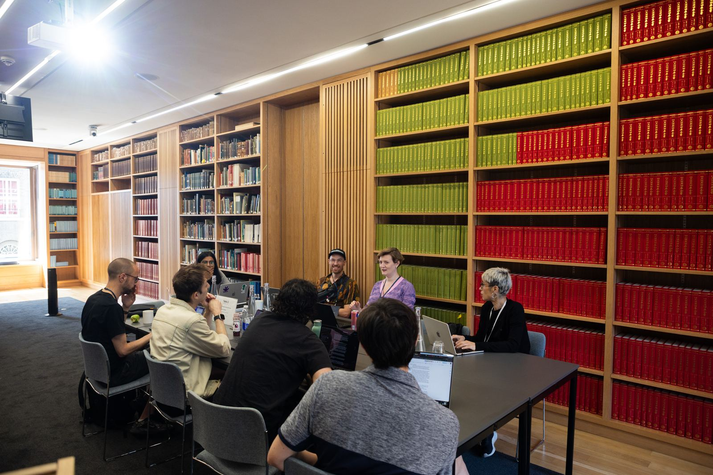

Newsletter
The latest news and research on AI consciousness, moral status, and digital minds.
-

Latest post · June 19, 2026
Functional Emotions and The Pope's Encyclical on AI
We explore functional emotions in AI systems and examine the Pope's landmark encyclical on artificial intelligence.
-

March 10, 2026
The Vatican, AI Legal Personhood, and Claude's Constitution
The Vatican weighs in on AI moral status, the debate over AI legal personhood heats up, and we examine the principles behind Claude's model spec.
-

December 18, 2025
Digital Minds in 2025: A Year in Review
AI consciousness enters the public discourse, Anthropic leads by example, and the field begins to grow.